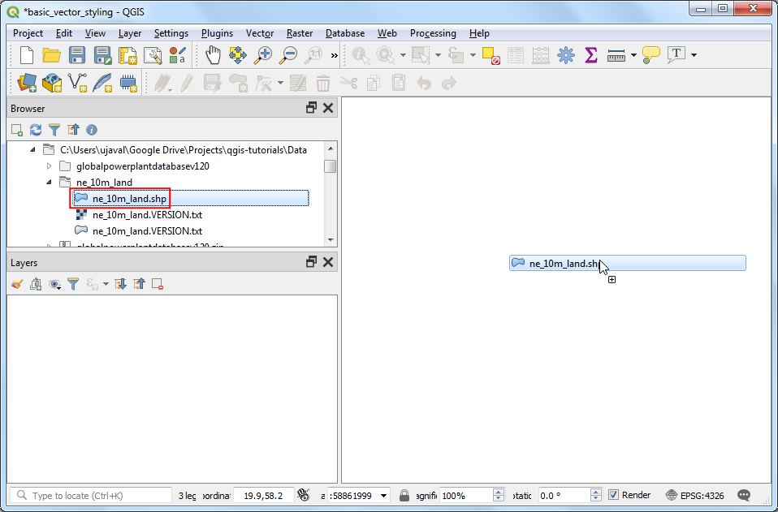
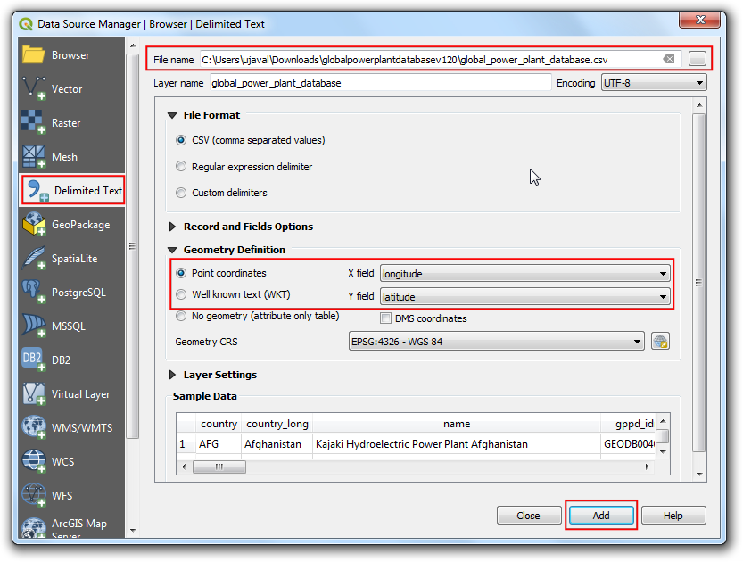
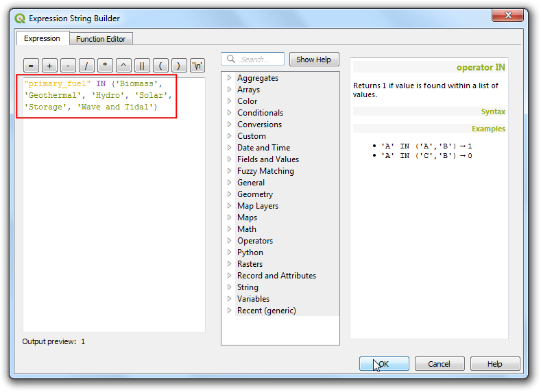
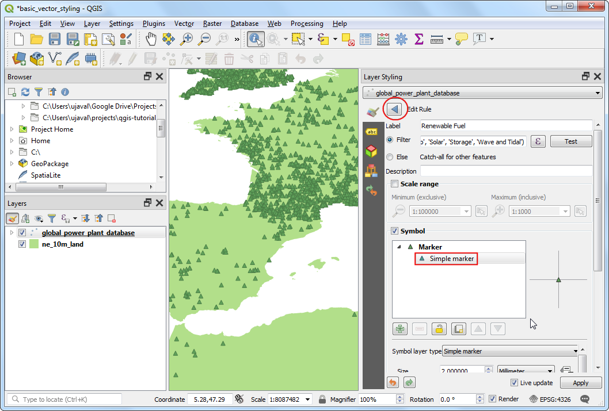
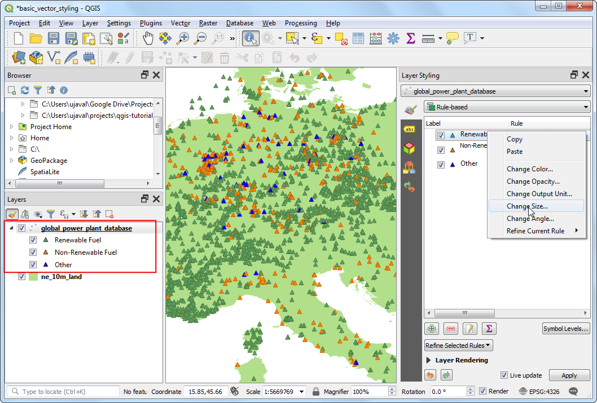
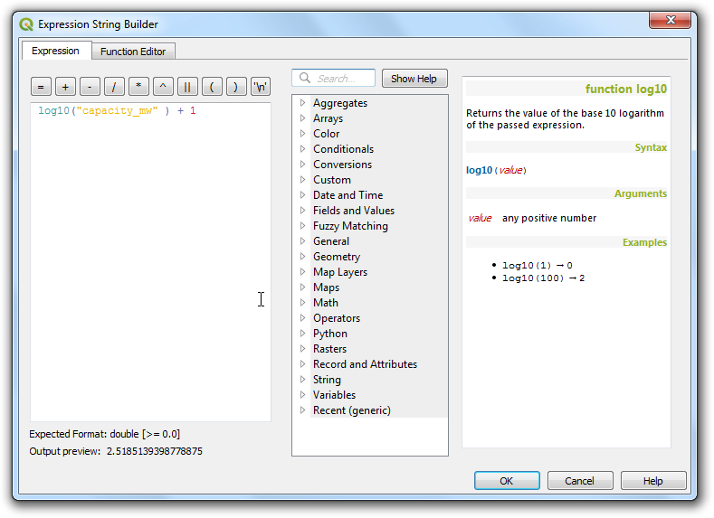
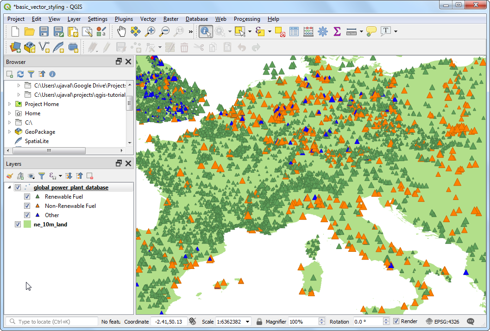

استایل برداری پایه (QGIS3)¶
برای ایجاد یک نقشه، باید به داده های GIS استایل داده و به شکلی ارائه شود که از نظر بصری آموزنده باشد. تعداد زیادی گزینه در QGIS برای اعمال انواع مختلف نمادشناسی در داده های زیربنایی موجود است. در این آموزش، یک فایل متنی می گیریم و تکنیک های مختلف تجسم داده ها را برای برجسته کردن الگوهای فضایی در داده ها اعمال می کنیم.
بررسی اجمالی کار¶
ما یک فایل CSV حاوی مکان همه نیروگاههای جهان میگیریم و تصویری را ایجاد میکنیم که توزیع سوختهای تجدیدپذیر و غیر قابل تجدید مورد استفاده در این نیروگاهها را نشان میدهد.
مهارت های دیگری که یاد خواهید گرفت¶
از عبارات برای گروه بندی چندین مقدار مشخصه در یک دسته استفاده کنید
داده ها را دریافت کنید¶
"موسسه منابع جهانی <https://www.wri.org>" یک پایگاه داده جامع و منبع باز از نیروگاه ها در سراسر جهان گردآوری کرده است که بیش از 30000 نیروگاه را پوشش می دهد. پایگاه داده جهانی نیروگاه <http://datasets.wri.org/dataset/globalpowerplantdatabase>`_ را از پورتال داده باز WRI دانلود کنید.
"زمین طبیعی <http://naturalearthdata.com>"_ چندین لایه برداری سراسری دارد. "بردارهای فیزیکی 10 متر - زمین <https://www.naturalearthdata.com/http//www.naturalearthdata.com/download/10m/physical/ne_10m_land.zip>"_ حاوی چند ضلعی های سرزمین را دانلود کنید.
برای راحتی کار، می توانید یک کپی از لایه های بالا را مستقیماً از زیر دانلود کنید:
globalpowerplantdatabasev120.zip
منبع داده [WRI] [NATURALEARTH]
روش¶
هر دو مجموعه داده را در یک پوشه در رایانه خود از حالت فشرده خارج کنید. در پنل مرورگر QGIS، دایرکتوری را که در آن داده ها را استخراج کرده اید، پیدا کنید. پوشه "ne_10m_land" را باز کنید و لایه "ne_10m_land.shp" را انتخاب کنید. لایه را روی بوم بکشید.

شما یک لایه جدید «ne_10m_land» دریافت خواهید کرد که به پنل :guilabel:`Layers اضافه شده است. پایگاه داده نیروگاه جهانی به عنوان یک فایل CSV ارائه می شود، بنابراین باید آن را وارد کنیم. روی دکمه :guilabel:'Open Data Source Manager' در :guilabel:'Data Source Toolbar' کلیک کنید. همچنین می توانید از میانبر صفحه کلید :kbd:`Ctrl + L استفاده کنید.

در پنجره :guilabel:'Data Source Manager' به تب :guilabel:'Delimited Text' بروید. روی دکمه ... در کنار نام فایل کلیک کنید و به دایرکتوری که در آن فایل "globalpowerplantdatabasev120.zip" را استخراج کرده اید، بروید. "global_power_plant_database.csv"" را انتخاب کنید. QGIS فیلدهای جداکننده و هندسه را به صورت خودکار تشخیص می دهد. :guilabel:`Geometry CRS را به مقدار پیش فرض
EPSG:4326 - WGS84بگذارید. روی :guilabel:"Add" و سپس :guilabel:"Close" کلیک کنید.

یک لایه جدید `` global_power_power_plant_database`` به پنل :guilabel:`Layers اضافه می شود و نقاط نشان دهنده نیروگاه ها را در بوم خواهید دید. حالا ما آماده ایم که هر دو لایه را استایل کنیم. روی دکمه :guilabel:'Open the Layer Styling panel' در بالای پانل :guilabel:`Layers کلیک کنید.

پنل Layer Styling در سمت راست باز می شود. ابتدا لایه «ne_10m_land» را انتخاب کنید. این لایه پایه ما خواهد بود تا بتوانیم استایل را حداقلی نگه داریم تا حواس پرت نشود. روی "Simple fill" کلیک کنید و به پایین اسکرول کنید. یک :guilabel:'Fill color' را به دلخواه انتخاب کنید. روی منوی کشویی کنار :guilabel:'Stroke color' کلیک کنید و 'Transparent Stroke' را انتخاب کنید. این باعث می شود که خطوط چند ضلعی زمین شفاف باشد. نتیجه انتخاب خود را بلافاصله روی لایه اعمال خواهید کرد.

سپس لایه "global_power_plant_database" را انتخاب کنید. روی "نشانگر ساده" کلیک کنید و به پایین اسکرول کنید. یک نشانگر مثلثی انتخاب کنید

به بالا بروید و Fill color مورد علاقه خود را انتخاب کنید. یک تکنیک کارتوگرافی مفید این است که یک نسخه کمی تیرهتر از رنگ پرکننده را بهعنوان :guilabel: «Stroke color» انتخاب کنید. QGIS به جای تلاش برای انتخاب آن به صورت دستی، عبارتی را برای کنترل دقیقتر آن ارائه میکند. بر روی دکمه :guilabel:'Data defined override' کلیک کنید و :guilabel:'Edit' را انتخاب کنید.

عبارت زیر را وارد کنید تا رنگ را 30 درصد تیره تر از رنگ پر کنید و روی :guilabel:'OK' کلیک کنید.
darker(@symbol_color, 130)
توجه
توجه داشته باشید که این عبارت مستقل از رنگ پر کننده ای است که انتخاب کرده اید. خواهید دید که این در مراحل زیر بسیار مفید است، جایی که به طور خودکار رنگ حاشیه را بر اساس رنگ پر ارائه شده تنظیم می کند.
متوجه خواهید شد که دکمه :guilabel:'Data defined override' در کنار :guilabel:'Stroke color' زرد شده است - نشان می دهد که این ویژگی توسط یک لغو کنترل می شود. رندر تک نماد لایه نیروگاه ها چندان مفید نیست. اطلاعات زیادی به جز مکان نیروگاه ها نمی دهد. بیایید از یک رندر متفاوت برای مفیدتر کردن آن استفاده کنیم. روی منوی کشویی Symbology کلیک کنید و رندرگر ``Categorized` را انتخاب کنید.

لایه "پایگاه_داده_نیروگاه_جهانی" حاوی یک ویژگی است که نشان دهنده سوخت اولیه مورد استفاده در هر نیروگاه است. ما می توانیم سبکی ایجاد کنیم که در آن هر نوع سوخت منحصر به فرد با رنگ متفاوتی نشان داده شود. "سوخت_اصلی" را به عنوان :guilabel:"Column" انتخاب کنید. روی :guilabel:`Classify کلیک کنید. چندین دسته ظاهر می شوید و رندر نقشه بر این اساس تغییر می کند.

While a Categorized view is useful, this layer contains too-many categories for one to meaningfully interpret the map. A better approach would be to group certain type of fuel categories and reduce the number of classes. Let's try to create 3 categories - Renewable fuel, Non-renewable fuel and Other. Select
Rule-basedrenderer. We want to delete all the categories except the top one. Select the second category from the top, hold the Shift key and click the bottom category. This will select all the categories except the top one. Once selected, click the Remove selected rules button to delete them.

قانون باقیمانده را انتخاب کنید و روی :guilabel:`Edit current rule کلیک کنید.

"سوخت تجدید پذیر" را به عنوان :guilabel:"Label" وارد کنید. روی دکمه Expression در کنار :guilabel:`Filter کلیک کنید.

در گفتگوی Expression String Builder، عبارت زیر را وارد کرده و روی :guilabel:`OK کلیک کنید. در اینجا ما چندین دسته انرژی های تجدیدپذیر را در یک دسته گروه بندی می کنیم.
"primary_fuel" IN ('Biomass', 'Geothermal', 'Hydro', 'Solar', 'Wind', 'Storage', 'Wave and Tidal')
توجه
انواع سوخت انتخابشده برای دستههای تجدیدپذیر در مقابل غیرقابل تجدید براساس «ویکیپدیا <https://en.wikipedia.org/wiki/Renewable_energy>» است. تعاریف و طبقه بندی های جایگزینی وجود دارد که ممکن است با آنچه در اینجا انتخاب شده مطابقت نداشته باشد.
به پایین بروید و روی Simple marker کلیک کنید. یک :guilabel:`Fill color مناسب انتخاب کنید. پس از اتمام، روی دکمه Back کلیک کنید.

یک قانون واحد را مشاهده خواهید کرد که برای دسته سوخت تجدیدپذیر روی لایه اعمال می شود. روی ردیف کلیک راست کرده و Copy را انتخاب کنید. دوباره کلیک راست کرده و Paste را انتخاب کنید.

یک کپی از قانون موجود اضافه خواهد شد. ردیف جدید اضافه شده را انتخاب کنید و روی :guilabel:'Edit current rule' کلیک کنید.

"سوخت غیر قابل تجدید" را به عنوان :guilabel:"Label" وارد کنید. روی دکمه Expression در کنار :guilabel:`Filter کلیک کنید.

در گفتگوی Expression String Builder، عبارت زیر را وارد کرده و روی :guilabel:`OK کلیک کنید.
"primary_fuel" IN ('Coal', 'Gas', 'Nuclear', 'Oil', 'Petcoke')
به پایین بروید و روی Simple marker کلیک کنید. یک :guilabel:`Fill color مناسب انتخاب کنید. پس از اتمام، روی دکمه Back کلیک کنید.

برای افزودن قانون سوم، فرآیند Copy/Paste را تکرار کنید. آن را انتخاب کنید و روی :guilabel:'Edit current rule' کلیک کنید.

"سایر" را به عنوان :guilabel:"Label" وارد کنید. :guilabel:"Else" را انتخاب کنید - به جای :guilabel:"Filter" همه ویژگیهای دیگر را بگیرید. این تضمین می کند که هر دسته ای که در 2 قانون قبلی از قلم افتاده است، با این قانون استایل بندی می شود. به پایین بروید و روی Simple marker کلیک کنید. یک :guilabel:`Fill color مناسب انتخاب کنید. پس از اتمام، روی دکمه Back کلیک کنید.

اکنون طبقه بندی مجدد کامل شده است. نمای بسیار تمیزتری را مشاهده خواهید کرد که توزیع منابع سوخت تجدیدپذیر در مقابل منابع سوخت غیرقابل تجدید مورد استفاده توسط نیروگاه ها و توزیع آنها در کشورها را نشان می دهد. با این حال، این یک تصویر کامل ارائه نمی دهد. می توانیم متغیر دیگری را به استایل اضافه کنیم. به جای نمایش همه نشانگرها با اندازه یکنواخت، میتوانیم اندازههای متناسب با ظرفیت تولید برق هر نیروگاه را نشان دهیم. این تکنیک کارتوگرافی نقشه چند متغیره نامیده می شود. روی قانون "سوخت تجدید پذیر" کلیک راست کرده و :guilabel:"Change Size" را انتخاب کنید.

روی دکمه نقض داده های تعریف شده در کنار :guilabel:`Size کلیک کنید. :guilabel:'Edit' را انتخاب کنید.

از آنجایی که ظرفیت تولید برق در میان مجموعه داده ما بسیار متفاوت است، یک راه موثر برای بدست آوردن یک محدوده کوچک برای اندازه، استفاده از تابع "log10" است. شما می توانید با عبارات مختلف آزمایش کنید تا به آنچه برای تجسم مورد نظر شما بهترین کار را دارد برسید. عبارت زیر را وارد کرده و روی OK کلیک کنید.
log10("capacity_mw") + 1
همین روند را برای قوانین دیگر تکرار کنید.

پس از رضایت، می توانید Layer Styling panel را ببندید.

با نگاهی به تجسم نهایی ما، می توانید بلافاصله الگوهای موجود در مجموعه داده را ببینید. به عنوان مثال، در سراسر اروپا نیروگاه های بیشتری وجود دارد که از منابع انرژی تجدیدپذیر استفاده می کنند، اما ظرفیت کمتری نسبت به نیروگاه هایی دارند که از انرژی های تجدید ناپذیر استفاده می کنند.

If you want to give feedback or share your experience with this tutorial, please comment below. (requires GitHub account)